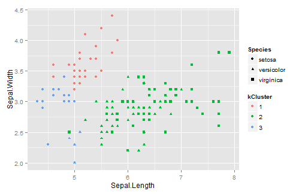

By,
Josey Mathew
Developing Data Products- Course Project
---
<h1 align="center"> k-Means Visulaization </h1>
<BR><BR> <BR><BR> <BR><BR> <BR><BR> <BR><BR> <BR><BR>
<p> By, </p>
<p> Josey Mathew </p>
<p> Developing Data Products- Course Project </p>
---
## k-Means Clustering
* k-Means clustering is an unsupervised learning method that partitions n observations into k clusters.
* The algorithm begins by randomly choosing k samples from the given set as initial centers.
* The training samples are clustered and said to belong to the center closest to it.
* The cluster centers are then updated as the mean value of the cluster members.
* The process repeats until convergence.
---
## k-Means Clustering
### Advantages
* With large number of varaibles, k-Means is computationally faster than hierarchial clustering (for small k).
* k-Means may produce tighter clusters than hierarchial clustering, especially if the clusters are globular.
* The algorithm is easier to understand.
### Dis-advantages
* Initialization might affect the quality of the clusters produced.
* Setting the number of clusters to be found is difficult to predict.
* The distance metric used affects the type of clusters found.
data(iris)
require(ggplot2)
## Loading required package: ggplot2
kc <- kmeans(iris[, -5], 3)
iris$kCluster <- factor(kc$cluster)
ggplot(iris)+geom_point(aes(x=Sepal.Length, y=Sepal.Width, shape=Species, col=kCluster))

---
## Iris Example
* Testing k-Means on Iris data to check for naturally formed clusters of Species.
```{r, cache=TRUE, fig.height=4.5}
data(iris)
require(ggplot2)
kc <- kmeans(iris[, -5], 3)
iris$kCluster <- factor(kc$cluster)
ggplot(iris)+geom_point(aes(x=Sepal.Length, y=Sepal.Width, shape=Species, col=kCluster))
```
---
## Shiny app
* The <a href="https://tijoseymathew.shinyapps.io/ddpCourseProject/" >shiny application</a> is developed to give a visualization of k-Means clustering.
* The user has the choice of randomly generating n samples in a two dimensional space.
* The user can also select the number of cluster centers.
* The generated samples and the cluster center are shown in two different plots.
* Playing around with the different setting allows user to understand different aspects of k-Means clustering.
| 1 | |
| k-Means Clustering | 2 |
| k-Means Clustering | 3 |
| Iris Example | 4 |
| Shiny app | 5 |
| Table of Contents | t |
|---|---|
| Exposé | ESC |
| Full screen slides | e |
| Presenter View | p |
| Source Files | s |
| Slide Numbers | n |
| Toggle screen blanking | b |
| Show/hide slide context | c |
| Notes | 2 |
| Help | h |